01
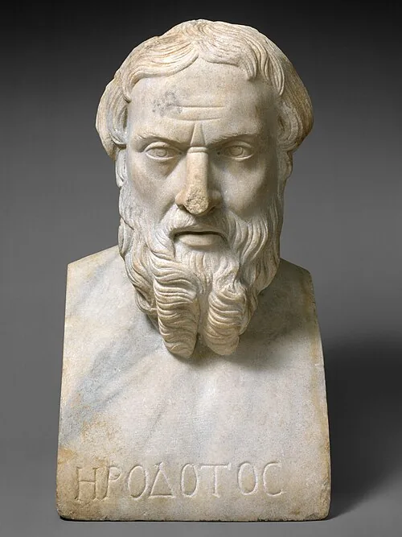
c. 484–c. 425 BCE
History · Greek
Historian from Halicarnassus. Book 4 of the Histories places the silphium country among the peoples of Libya.
Image ↗ Roman copy of a Greek bust, second century CE. Metropolitan Museum of Art · CC0.
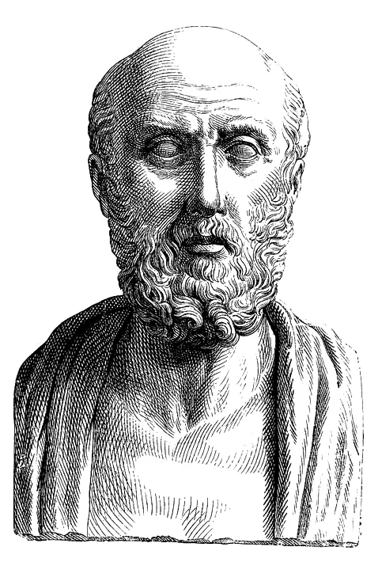
late 5th–4th c. BCE
Medicine · Greek · composite authorship
A collection of medical treatises by multiple authors. Diseases IV discusses attempts to cultivate Libyan silphium in Ionia and the Peloponnese.
Image ↗ Later engraving of Hippocrates, the corpus’s traditional namesake; the author of Diseases IV is unknown. Unidentified engraver · public domain.
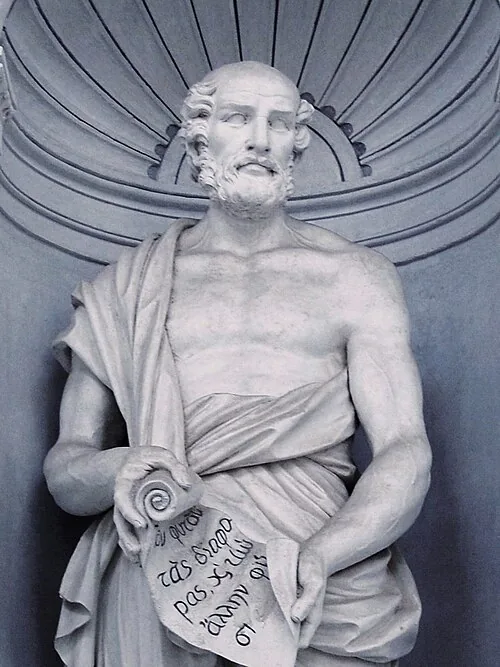
c. 371–c. 287 BCE
Botany · Greek
Greek philosopher and naturalist. Enquiry into Plants records the form, harvesting, range, and reported cultivation of silphium.
Image ↗ Modern statue at Palermo Botanical Garden. tato grasso / Singinglemon · CC BY-SA 2.5.
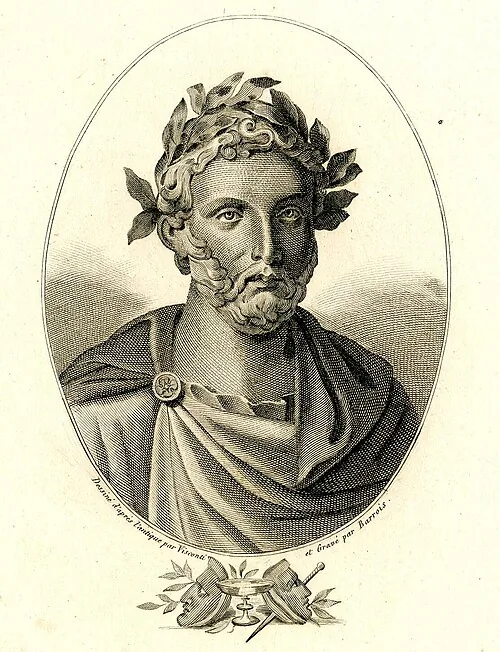
c. 254–184 BCE
Comedy · Latin
Roman comic playwright. In Rudens, a character invokes a hoped-for silphium harvest and a shipment to Capua.
Image ↗ Imagined portrait engraved in 1770. Pierre François Barrois · public domain.
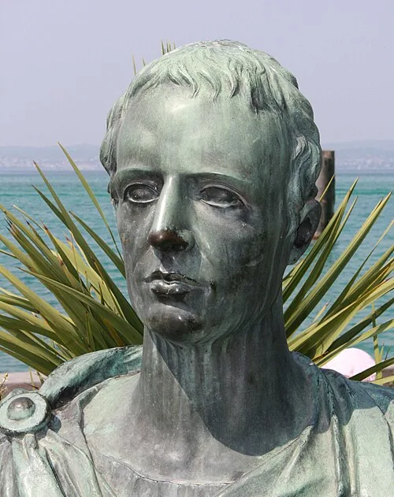
c. 84–c. 54 BCE
Poetry · Latin
Roman poet of the late Republic. Poem 7 uses silphium-bearing Cyrene as a point of comparison.
Image ↗ Twentieth-century bust at Sirmione. Schorle · CC BY-SA 3.0.
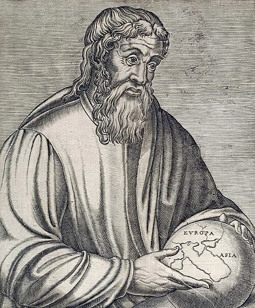
64/63 BCE–c. 24 CE
Geography · Greek
Greek geographer from Amaseia. Geography 17 describes a long, narrow silphium-producing region south of Cyrenaica.
Image ↗ Imagined portrait engraved by André Thévet in 1584. André Thévet · public domain.

23/24–79 CE
Natural history · Latin
Roman encyclopedist. Two passages in Natural History discuss scarcity of Cyrenaic silphium, imported resin, and medicinal uses.
Image ↗ Nineteenth-century imagined portrait, published in 1859. Geoffrey · public domain.
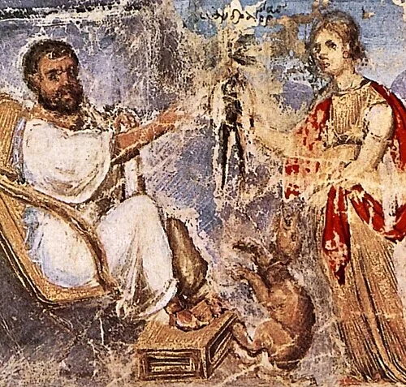
fl. c. 50–70 CE
Medicine · Greek
Greek physician and pharmacological author. De materia medica 3.80 compares silphium and resin from Libya and eastern regions.
Image ↗ Dioscorides depicted in the Vienna Dioscurides manuscript, c. 512 CE. Unknown artist · public domain.
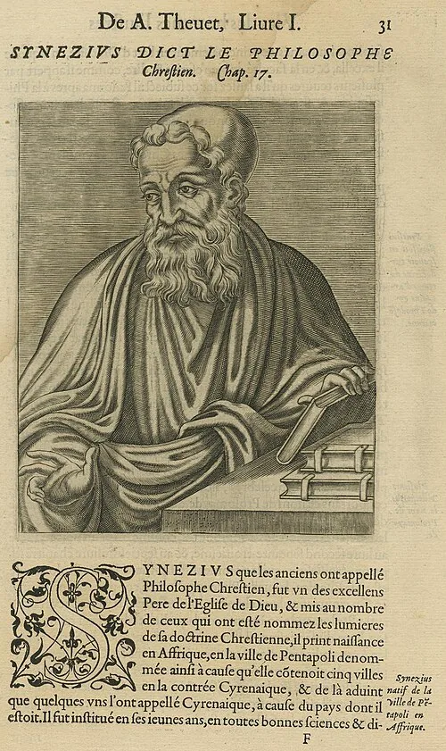
c. 373–c. 413/414 CE
Letters · Greek
Writer and later bishop in Cyrenaica. Two letters mention a garden plant called silphium and a gift of its juice.
Image ↗ Imagined portrait engraved for André Thévet’s 1584 collection. British Museum / André Thévet · public domain.

1526–1609
Natural history · Latin
Author of Exoticorum libri decem (1605), which includes a description of a dodo leg in the collection of Pieter Pauw at Leiden.
Image ↗ Typographic initials; no portrait used. Atlas of Historically Lost Species · original asset.

1583–1654
Natural history · English
His annotations on Thomas Browne describe a captive bird shown in London about 1638.
Image ↗ Typographic initials; no portrait used. Atlas of Historically Lost Species · original asset.

1606–1682
Travel · English
Author of A relation of some yeares travaile (1634), including a description and illustration of the dodo.
Image ↗ Typographic initials; no portrait used. Atlas of Historically Lost Species · original asset.

fl. 1630s–1651
Travel · French
His Relation du voyage appears in Relations veritables et curieuses (1651), compiled by Claude-Barthélemy Morisot.
Image ↗ Typographic initials; no portrait used. Atlas of Historically Lost Species · original asset.
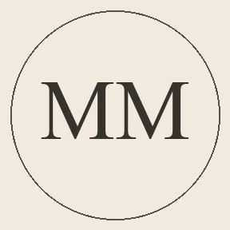
fl. 1690s–1719
Travel writing · Gaelic / English
Traveller from Skye who visited St Kilda in 1697. His 1698 book describes the Gairfowl’s body, egg, and seasonal presence.
Image ↗ Typographic initials; no portrait used. Atlas of Historically Lost Species · original asset.

1709–1746
Natural history · Bering’s second Kamchatka expedition
German physician and naturalist in Russian service. Shipwrecked with Bering’s crew on Bering Island in 1741–1742, where he described the sea cow from living and dissected animals.
Image ↗ Typographic initials; no portrait used. Atlas of Historically Lost Species · original asset.

1726–1798
Natural history · English
Welsh naturalist whose British Zoology describes the great auk and draws on Martin Martin’s earlier account of St Kilda.
Image ↗ Engraved portrait of Thomas Pennant, eighteenth century. National Library of Wales · public domain.
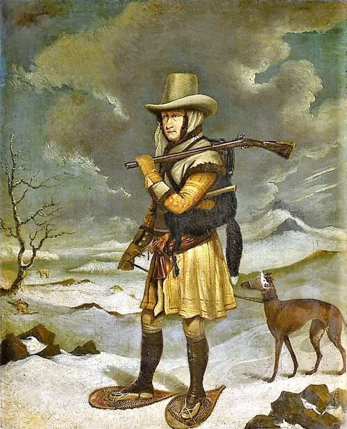
1739–1819
Travel journal · English
Trader and journal writer in Labrador and Newfoundland. His entry for 5 July 1785 describes great auk harvesting at Funk Island.
Image ↗ Engraved portrait of George Cartwright. Wikimedia Commons · public domain.

1764–1848
Travel writing · British colonial administration
Travelled in southern Africa while serving under Lord Macartney at the Cape. His account includes a reported reappearance of blue antelope near Sweet Milk Valley.
Image ↗ Typographic initials; no portrait used. Atlas of Historically Lost Species · original asset.

fl. 1785–1802
Expedition account · Russian service
English secretary to Joseph Billings’s Russian expedition to north-eastern Siberia and the Aleutian Islands, 1785–1794. His published account reports the sea cow’s extinction at second hand.
Image ↗ Typographic initials; no portrait used. Atlas of Historically Lost Species · original asset.

1829–1907
Ornithology · English
British ornithologist who published John Wolley’s research and interviews about the great auk in Iceland.
Image ↗ Engraved portrait in The Graphic, 1887. The Graphic / Historian 1875 · public domain / CC0.

1832–1901
Arctic exploration · geology
Finnish-born Swedish geologist and explorer. Led the Vega expedition through the Northeast Passage, 1878–1880, and gathered testimony about the sea cow on Bering Island in 1879.
Image ↗ Typographic initials; no portrait used. Atlas of Historically Lost Species · original asset.

fl. 1842
Naval correspondence
Lieutenant commanding HMS Sparrow. Recorded the statements of Henry Whiteman and Samuel Profit after rescuing them on West Falkland in February 1842.
Image ↗ Typographic initials; no portrait used. Atlas of Historically Lost Species · original asset.
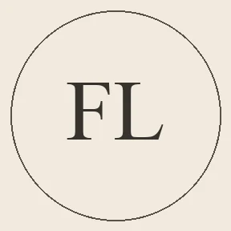
1852–1929
Zoology · English
American zoologist who visited Funk Island in 1887 and mapped the great auk’s former breeding ground from terrain and surviving remains.
Image ↗ Typographic initials; no portrait used. Atlas of Historically Lost Species · original asset.
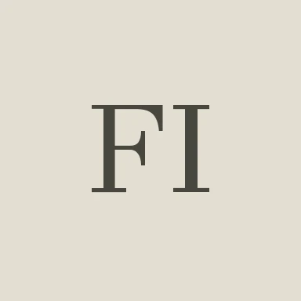
fl. 1894 · composite attribution
Editorial inquiry · local correspondence
The magazine’s editor and the correspondents E. J. Smith, Thomas H. Butler and an anonymous writer signing “A Witness.” The letters concern remembered killings at Fox Bay.
Image ↗ Typographic initials; no portrait used. Atlas of Historically Lost Species · original asset.


.png)